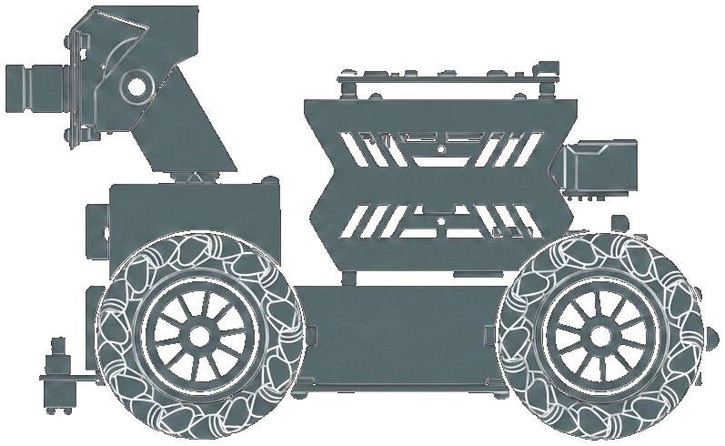
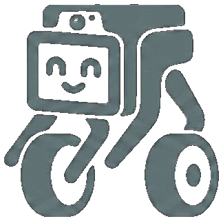
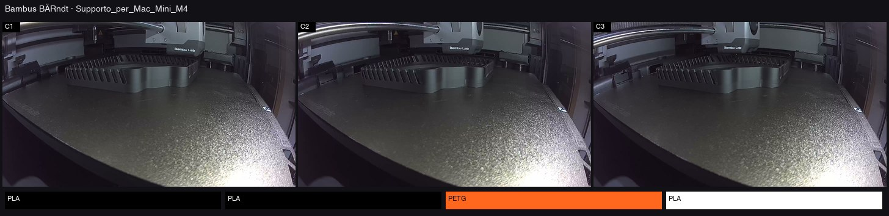

Full-stack agent
Postgres memory, tool registry, Discord bot, scheduled heartbeats, self-healing watchdogs.
Solo-built · embodied AI · Nov 2025 to Aug 2026
One person built a persistent AI with memory, tools, owned voice, and robot bodies. Python and Postgres on a Mac mini. Raspberry Pi on the floor. Samsung Flip in the pocket.
Postgres memory, tool registry, Discord bot, scheduled heartbeats, self-healing watchdogs.
Owned Qwen3-TTS voice (miore) on Apple Silicon. Same profile across Discord, LiveKit, and robot memos.
Rasp-Bear Mecanum robot: cruise, story-grid vision, SAM look-drive, ultrasonic safety on the Pi.
Six cards. Expand sections below for architecture detail.
Persistent AI on Mini-1: Postgres memory, tools, Discord, agent loop.
Mini-2 runs Ollama and SAM 3.1. Substrate64 (M1 Pro, 64 GB) runs MLX sidecars only.

BodiesRasp-Bear and Flip phone body. Rider was the first body. Hardware retired. Robotics atlas
Core blocks plus grep-first cascade. Vector and graph recall stay in shadow until inject is audited. Topics
Discord, heartbeats, owned Qwen3-TTS (miore), face storyboard on Flip.
Mapless nav. Cruise works. Global pose without a floor plan does not yet.
What runs where. Miu never talks to a Pi or phone directly. Everything goes through Substrate proxies.
| Component | Role |
|---|---|
| Mac mini · Mini-1 | Live Substrate API, Postgres, Discord bot, Qwen3-TTS MLX sidecar |
| Mac mini · Mini-2 | Ollama embeddings, SAM 3.1 on demand |
| Rasp-Bear Pi | Mecanum body, LiDAR C1, SoftLoc, FastAPI body API |
| Hey Miu Flip 5 | Cover face, sensors, LiveKit + HTTP body |
| Qwen3-TTS | Owned voice miore on Apple Silicon (Qwen3-TTS MLX) |
| Discord bot | Text, voice, heartbeat, Myzel approvals |
| Miu Face | Storyboard source of truth, LiveKit face track to phones |
| Tier | Latency | Where | Example |
|---|---|---|---|
| T0 | <100 ms | Pi | Ultrasonic collision guard, E-stop |
| T1 | 50–800 ms | Pi → Substrate | Hotword, QR detection |
| T2 | Seconds | Substrate | Agent speech, cruise tools |
| T3 | Async | Pi + Mac | Heavy vision, Nav2 lane |
Tool registry is large (~200 schemas). Here: live capability domains. Representative names only.
Core blocks every turn. Grep-first cascade. Archival tags. Shadow unified recall.
Cruise, places, person-search, story-grid align, SAM look-drive. SoftLoc feel.
Cover face, snapshots, vision journal, on-device computer use.
Owned Qwen3-TTS voice. Discord text/voice. Storyboard poses on LiveKit.
Web, arXiv, PDFs, Hortus library, Playwright browser, YouTube transcripts.
Bambu LAN print inbox. Fusion MCP for custom parts.
SKILL.md at runtime. Progressive load. Miu authors under corset. Offline SkillOpt + HiSkill graph next.
Plans and swarms. Infra watchdogs. Sandboxed code when needed.
Rider Pi tools remain in the registry as history. Active mobility tools are Rasp-Bear. Names above are representative from the live agent registry.
| Domain | What it covers | Example tools |
|---|---|---|
| Memory | Core prompt blocks, cascade graph, archival tags, MMA | cascade_search, conversation_search, mma_gateway, cypher_read |
| Rasp-Bear | Move, PTZ, cruise, places, vision→action, expressions, memos | raspbot_cruise, raspbot_navigate_to, raspbot_approach_target, raspbot_run_routine, raspbot_lidar_scan |
| Flip / phone | Sensors, capture, observe, computer use | flip5_observe_now, flip5_vision_journal_read, phone_computer_use |
| Voice / media | TTS, Discord voice, face/storyboard, Tabby clips | mius_speak, send_voice_message, tabby_animation_create, higgsfield_storyboard |
| Research | Search, papers, places, browser, YouTube transcripts (not video search) | web_search, youtube_gateway, arxiv_*, fetch_webpage, browser_navigate |
| Knowledge | Hortus vault, EPUB ingest, foundation mining | hortus_gateway, epub_to_markdown |
| Maker | 3D print + CAD bridge | bambu_gateway, fusion_mcp |
| Skills | SKILL.md playbooks, progressive view, authoring, HiSkill graph slice | list_skills, skill_view, skill_builder, run_skill_workflow |
| Swarm / plan | Subagents, parallel delegate, scheduled focus | spawn_subagent, delegate_parallel, plan_and_execute, pulse_regulator |
| Presence extras | Maps, Spotify, wearables (gated), shopping | google_maps_gateway, spotify_control, ultrahuman_*, bring_shopping_list |
| Safety / ops | Approvals, backups, model switch, doors | review_pending_approvals, self_restart, switch_model_source |
Nine months from Discord-only agent to robot on the floor.

Dec 2025miore replaces ElevenLabs. Miu Face storyboard on Flip via LiveKit. shippeddrive_until with ultrasonic stop. liveForks we closed on purpose.
| We looked at | Decision | What we learned |
|---|---|---|
| Letta Cloud for robot runtime | Rejected | Local Substrate + body API = control and latency |
| Neo4j sidecar for memory | Parallel research | Postgres + AGE stay primary; Neo4j paths remain optional |
| SSH hacks to the Pi | Replaced | FastAPI body API + Substrate proxy for every body |
| ElevenLabs as primary TTS | Replaced | Owned Qwen3-TTS miore on Mini-1, same voice everywhere |
| Recall inject on day one | Shadow first | Judge scores candidates; inject blocked until audit green |
| We looked at | Decision | Reconsider if | What we learned |
|---|---|---|---|
| Apache AGE in Postgres | Adopted | — | Cypher + materialized edges without second DB |
| Full DimOS on Pi | Rejected on Pi | Pi can run full agent loop with T0 latency | Methodology on Mac; Pi stays FastAPI + T0 |
| ROS2 on Raspbot Pi 5 | Optional Nav2 lane | Nav2 owns production cruise | FastAPI canonical; LiDAR mutex |
| €16k humanoid | Not our path | Need human-scale manipulation | Small bodies we can own and fix |
| Yahboom vendor demos | Catalog only | Vendor API matches ours | Port behaviors; never parallel stack |
| Semantic-only recall | Gnostic convergence | Vector-only beats graph in A/B | Graph sparks + flashbacks; still shadow inject |
One-line summaries. Open a section for architecture detail.
SKILL.md playbooks. Progressive disclosure via list_skills then skill_view. Miu can author with skill_builder under a context corset.skill_view(..., view="graph") instead of dumping full markdown every turn.best_skill.md from MMA skill telemetry. Promote only after review / Myzel. Never in the Discord hot path.| Layer | Role | Status |
|---|---|---|
| Runtime skills | list_skills / skill_view / skill_builder + MMA telemetry | live |
| HiSkill graph | AtomicOp catalog, edges, Skill-Scout gap judge, graph view | shipping |
| SkillOpt | Offline train from telemetry → best_skill.md → manual/Myzel promote | bridge open |
Index first. Full skill body only when the turn needs it.
Skill-Scout recommends gaps. Miu writes the skill. Operator/Myzel gates risk.
SkillOpt improves playbooks like training weights, but in text. Zero optimizer cost at inference.
No SkillOpt train loop inside Discord turns.
| Tool | Mechanism | When |
|---|---|---|
cascade_circle_grep | Regex on archival text + L1 | When did we mention X? |
cascade_search | Postgres memory graph | Navigate days and themes |
| Unified recall | Graph + vector + judge | Semantic supplement |
Live prompt blocks routed by channel, keywords, regime gates.
Structured search default for "do we know X?"
23:30 reconcile theme graph into weekly rollup.
Inject blocked until audit green. No placebo memory.
Text, voice, heartbeat, scheduled tasks. Risky writes hit Myzel approval embeds.
Diagnoses tool hang, DB lock, timeout. Structured telemetry.
Every 10th message: core mini-loop. Every 50th: archival mini-loop. Does not block replies.
| Myzel tier | Meaning | Example |
|---|---|---|
| 0 · Silent | Pure reads | Status fetch |
| 3 · Ask | Discord embed approval | Risky core edit |
| 4 · Escalate | High risk | Infra apply_fix |
Three face centers (Tabby, OGU, Miu Face). One storyboard source of truth on the Mini. Phones subscribe over LiveKit. They do not own the FSM.
Scenes are idle loops (stand, couch, light sleep, deep sleep). Edges are one-shot intro or outro MP4s that bridge poses. FaceArbiter holds speak sessions until tts_done.
| Channel | Status | Limit |
|---|---|---|
| Vision journal | Passive captions when link green | No agent turn per snapshot |
| Person-search / approach | Live on Rasp-Bear | Follow modes planned |
| Animatrix observe | ~3 min snapshot cycle (180 s) | Paused during teleop |
XGO Rider Pi was the first body, Nov 2025 to early 2026. Leg servo failed after aggressive gaits. Hardware left the lab. Rasp-Bear is the active mobility platform.
LAN printer via bambu_gateway on Substrate. Background print monitor posts cam-pulse grids while jobs run.
Custom parts via Fusion MCP in Cursor. Export to print inbox.

"Druck läuft. Drei Cam-Beats auf einem Grid. AMS leuchtet. Ich guck auf die Platte für dich — du musst nicht am Chamber kleben." Miu · Bambus BÄRndt pulse · Jul 22
Live job: Supporto_per_Mac_Mini_M4. Chamber cam pulse (C1–C3) + AMS swatches while bambu_print_monitor ticks. Same receipt energy as robot story-grids — just hotter plastic.
Rasp-Bear drives. Flip is a pocket body. Rider is history.
Mecanum, LiDAR C1, SoftLoc W1–W4, story-grid, SAM look-drive.
Hey Miu APK, cover face, heartbeat, vision journal.
First body. Hardware gone. See Topics for history.
Look at a story-grid cell. SAM 3.1 segments the target on Mini-2. IMU turn, then drive_until until ultrasonic guard stops. Live on the floor since Aug 2026.
Four lines that matter right now.
| Phase | Scope | Status |
|---|---|---|
| Nav · mapless | Cruise without prebuilt map. Pose drift still open. | main challenge |
| Nav · SAM look-drive | Story-grid + SAM 3.1 + drive_until under real sensors | live |
| Skills · HiSkill + SkillOpt | Graph slices + Scout live path. Offline SkillOpt train/promote still open. | partial |
| Voice + face | Qwen3-TTS shipped. FaceArbiter on Flip. Lipsync planned. | shipped |
| Phase | Scope | Status |
|---|---|---|
| Rasp-Bear SoftLoc | W1–W4 soft-wait, cruise, places, LiDAR C1 | shipped |
| Skills runtime | Progressive list/view + skill_builder + MMA telemetry | shipped |
| HiSkill + Skill-Scout | Graph refresh, gap judge on Substrate64, recommend → Miu write | shipping |
| SkillOpt offline | Telemetry export → train best_skill.md → Myzel promote | bridge open |
| Rasp-Bear localization | EKF / AMCL deferred | L3 optional |
| Recovery UX | Reverse-until-clear + voice harden | deploy pending |
| Memory | Core live; recall inject still shadow | inject shadow |
| Maker | Fusion → Bambu one-click print | W1 planned |